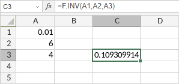

F.INV Funkcija
F.INV funkcija je jedna od statističkih funkcija. Koristi se za dobijanje inverzne vrednosti (desno-repne) F raspodele verovatnoće. F raspodela se može koristiti u F-testu za poređenje stepena varijabilnosti između dva skupa podataka.
Sintaksa
F.INV(probability, deg_freedom1, deg_freedom2)
F.INV funkcija ima sledeće argumente:
| Argument | Opis |
|---|---|
| probability | Verovatnoća povezana sa F kumulativnom raspodelom. Numerička vrednost veća od 0, a manja od 1. |
| deg_freedom1 | Stepeni slobode brojnika, numerička vrednost veća od 1. |
| deg_freedom2 | Stepeni slobode imenioca, numerička vrednost veća od 1. |
Napomene
Kako primeniti F.INV funkciju.
Primeri
Slika ispod prikazuje rezultat koji vraća F.INV funkcija.
